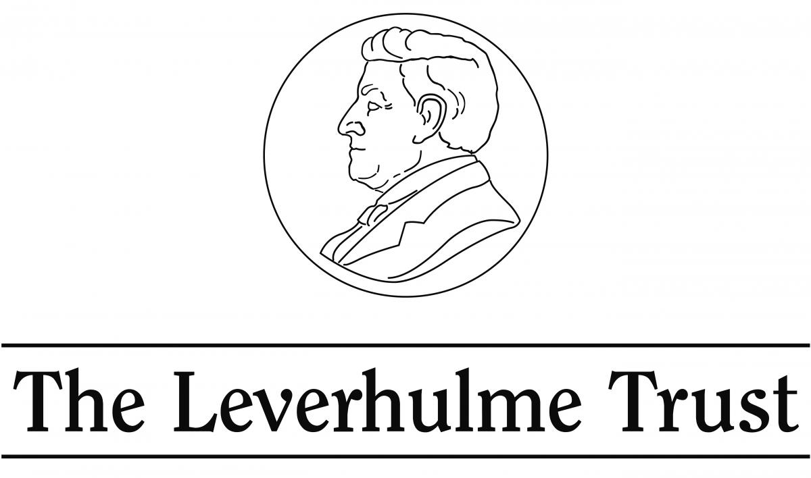

A Leverhulme funded project
Conceived by Liz Rideal, Reader in Fine Art at the Slade School of Art. Coordinated in collaboration with the Bartlett Centre for Spatial Analysis, UCL by Dr Duncan Hay and facilitated by Siyuan Ma. The site merges new and old images pinpointing their locations within a historical map of Lazio created around 1740 by cartographer Giovanni Battista Cingolani della Pergola and linking this to a contemporary GPS version of the same terrain. Old and new photographs site side by side and are accompanied by other images representing new visions of ghostly forms that also appear within the same scenery. These jabs of colour pretend to evoke spirits of the past, flitting like moths caught in the moment, blinking like the camera eye, the shutter trapping the glimpsed mutable form. The trace is the appearance of nearness, however far removed the thing that left it behind may be. The aura is the appearance of a distance, however close the thing that calls it forth. In the trace, we gain possession of the thing; in the aura, it takes possession of us.
Parallel to these three streams of pictures are short texts taken from a variety of authors inspired to write while on ‘the grand tourist’ trail. Travel offers new perspectives and the passage of time reminds of how things change irrevocably and imperceptibly in the moment. D.H.Lawrence writes of slow horse and cart transportation in order to visit difficult to reach places; the modern car dispenses with this but brings other surprise encounters and discoveries.
Credit: UCL Art Museum, University College London
This is an impressive vista of Rome, looking eastwards and spanning from St. Peter’s Basilica on the left to the Pyramid of Cestius and the Fonte dell-Acqua Paola on the far right.
Printed views of cities were first produced in the late 15th and early 16th centuries primarily as illustrations to biblical and historical stories. These views were documentary, charting the cityscape for a new audience of urban-based viewers across Europe, including scholars, merchants and city patricians. They fuelled a spirit of enquiry about distant places and established an interest in European travel. For example, this work depicts the city at the height of its popularity as one of the stops on the Grand Tour.
The vast panorama of Rome, made up of six separate plates, was probably designed either to be assembled as a single visual prospect upon a wall, or looked at as individual sheets within a bound portfolio. If the prints were pasted onto a wall, there was the problem in reading the density of information as some areas would always be hard to reach without steps. In the assembled panoramic format shown here the image would have been an ideal feature for a gentleman’s library, offering both an impressive display in its own right and readily consulted cross-reference tool for the location of specific ancient sites.
Guiseppe Vasi
Guiseppe Vasi was the leading topographic printmaker working in Rome and had served as Piranesi’s master in the early 1740s. Rather unjustly, Vasi has been unfavourably compared with his pupil, but although the stylistic range of Vasi’s work was not extensive, his output was significant. He produced detailed and compelling views of all the key ancient and contemporary sites of Rome which ably supplied a flourishing tourist market. Vasi clearly ran a sophisticated operation, and his work was widely distributed to print dealer across Europe and included in published tour guides. His compositions are more evenly lit than Piranesi’s and frequently heavily populated with figures.
